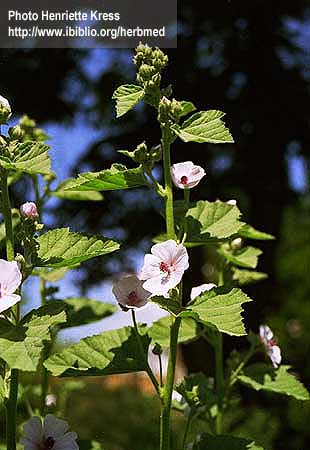

|
ECONOMICALLY
IMPORTANT PLANTS OF INDIA |
| Under-utilized Food and Fodder species and their wild relatives | Contributed by Ms.M.L Annapurna And Dr. Dhanapal, UAS, Bangalore |
Althaea officinalis
Taxonomic
Details

----- Correct Name
----- Classification
----- Synonyms
----- Common Names
Other Biological Details
----- Habit and Habitat
----- Diagnostic Features
----- Reproductive Biology
---------- Breeding System
---------- Phenology
---------- Pollinators
---------- Seed Biology
---------- Seed Germination
------ Cultivation
----- Major Pests and Diseases
Economic Potential and Uses
----- Parts Used
----- Uses
----- Harvesting Practices
----- Produce and Products
----- Chemistry
----- Processing Techniques
----- Other uses
----- Economic Potential to the
Country
----- Export Potential
Miscellaneous Information
Literature
Correct
Name : Althaea
officinalis L.
Family :
Synonyms :
Common Names :
Eng: Marsh mallow,
Hindi: Gulkhairo, Khaira, Khairakajhor, Khitmi-ka-jhar, Khitmigajhar
Marathi: Gulkhai, Khaira
Tamil: Shemaitutti, Simaitutti
Misc: Gulkhair, Khaira( Gujarathi), Khatme, Khitmi(Urdu)
HABIT
& HABITAT:
It is a perennial herb with ornamental flowers commonly found in the Western Himalayas,kashmir
and Punjab in India.
Availability :
Country: Afghanistan, Africa, England, Europe, India and Turkey,
Zone: Central, North, South and West.
State: Himachal Pradesh, Jammu & Kashmir and Punjab,
District: Kashmir and Kinnaur.
Status :
DIAGNOSTIC
FEATURES
Perennial erect herbs, 1 m tall, stem densely stellato-hirsute. Petiole 1-4 cm,
stellato-tomentose; leaf blade ovato-orbicular or cordate, 3-lobed or not lobed,
3-8 ´
1.5-6 cm, papery, densely stellato-tomentose abaxially and adaxially, base
nearly cordate or round, margin roundly dentate, apex shortly acute. Bracteoles
9, lanceolate, 4 mm, densely stellato-strigose. Calyx cup-shaped, 5-parted,
lobes lanceolate, longer than bracts, densely stellato-hirsute. Corolla ca. 2.5
cm in diam., reddish; petals 5, 1.5 cm, obovato-oblong. Staminal column 8 mm.
Fruit reniform, ca. 8 mm in diam., enclosed by persistent calyx, puberulous,
mericarps numerous.
Breeding
System :
Phenology :
The flowering occurs during July -August and also flowering occurs during
Aug.-Sept.
Pollinators:
Seed Biology :
Seed Germination :
Cultivation:
MAJOR
PESTS & DISEASES
Pests:
Diseases:
Parts
used:
Whole
plant for ornamental flowers. Roots and leaves.
Uses:
1.
The leaves are used in the preparation of a soothing ointment.
Harvesting Practices
Produce and Products:
Chemistry:
The roots contain mucilage 35% and starch 37%. It is an emollent and is used in
making absorbent pills and pastilles.Fatty oil consists largely of linoleic
acid.
A. rosea cav ( Holly-hock) is an ornamental plant. Its flowers yield a red dye ( anthocyanins) which may be used as an indicator in acidimetry and alkalimetry. Its seeds contain 11.9% of drying oil.
1.A Dictionary of Indian Medicinal Plants,1992,Akhtat Hussain et al,Central Institute Of Medicinal and Aromatic Plants,Lucknow,India,pp.28.
2.http://flora.huh.harvard.edu/china/mss/volume12/Malvaceae-MO_edited.htm
3.http://www.ibiblio.org/herbmed/pictures/p01/pages/althaea-officinalis-2.htm
4.
Kirtikar and Basu's Illustrated flora of Indian Medicinal Plants 2 K.S.
Mhaskar, E. Blatter, J.F.Caius
5 Sasya
Sahyadri- A CD on Plants of Western Ghats, 2003, K.N.
Ganeshaiah.
6.The wealth of India, A Dictionary of Indian Raw Materials and Industrial
Products, Vol. I. A-By, Publications and Information Directorate, CSIR, New
Delhi, India, 1948.pp.